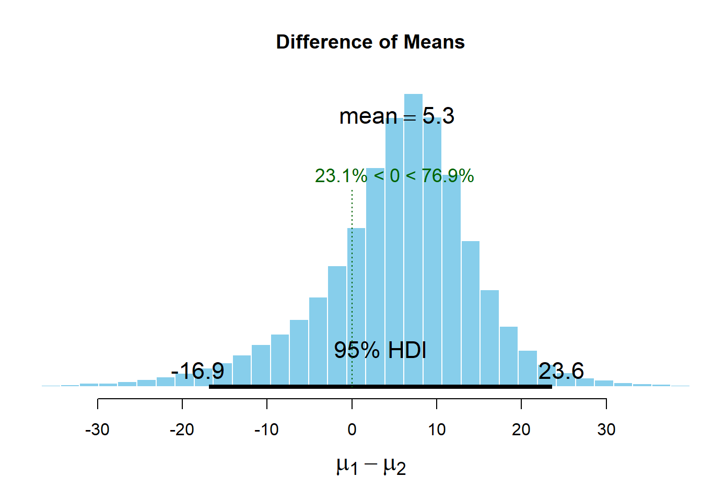

Chapter 2 Statistics
2.1 Logistic Regression
2.1.1 Matematyczna interpretacja modelu
Quiz correct answers: d. Hint: Remember, the coefficient in a logistic
regression model is the expected increase in the log odds given a one
unit increase in the explanatory variable.
| Survived | Fare | Fare_log |
|---|---|---|
| 0 | 7.2500 | 2 |
| 1 | 71.2833 | 4 |
| 1 | 7.9250 | 2 |
| 1 | 53.1000 | 4 |
| 0 | 8.0500 | 2 |
| 0 | 8.4583 | 2 |
Wyliczanie modelu logistycznego.
model <- glm(data=df_titanic, Survived ~ Fare_log, family = 'binomial')
tidy(model) %>% kable(caption='Table 1. Summary statistics for logistic regression model')| term | estimate | std.error | statistic | p.value |
|---|---|---|---|---|
| (Intercept) | -2.3337286 | 0.2452271 | -9.516601 | 0 |
| Fare_log | 0.6442428 | 0.0792358 | 8.130706 | 0 |
Model wyliczany jest zgodnie z ponizsza formula

dlategp by otrzymac oszacowania paraemtrow w formie ich wpływu na odds musimy je poddać działaniu exp()

coef(model)## (Intercept) Fare_log
## -2.3337286 0.6442428#Tak przemnozone wspolczynniki interpretujemy nastepujaco:
# o ile % wzrosnie odds wystapienia zdarzenia jezeli wzrosnie nam wartosc predyktora o 1
exp(coef(model))## (Intercept) Fare_log
## 0.09693365 1.90454431Ponizej w sposob matematyczny pokazuje ze to wlasnie oznacza interpretacja wzrostu parametra stajacego przy predyktorze.
df_aug <- augment(model, type.predict = "response") # without response argument, the fitted value will be on log-odds scale
p3 = df_aug$.fitted[df_aug$Fare_log==3][1]
p2 = df_aug$.fitted[df_aug$Fare_log==2][1]
x <- round(p3/(1-p3)/(p2/(1-p2)),5)
# i sprawdzenie czy dobrze rozumiem zależnosc
x1<-round(exp(coef(model))['Fare_log'],5)
x1==x## Fare_log
## TRUEProb for Fare_log = 2 was equal to 0.2601396 while for Fare_log = 3 was equal to 0.401072. The odds increase by 1.90454. The same what model results suggests -> 1.90454.
Quiz
The fitted coefficient from the medical school logistic regression model is 5.45. The exponential of this is 233.73.
Donald’s GPA is 2.9, and thus the model predicts that the probability of him getting into medical school is 3.26%. The odds of Donald getting into medical school are 0.0337, or—phrased in gambling terms—29.6:1. If Donald hacks the school’s registrar and changes his GPA to 3.9, then which of the following statements is FALSE:
Possible Answers
- His expected odds of getting into medical school improve to 7.8833 (or about 9:8).
- His expected probability of getting into medical school improves to 88.7%.
- His expected log-odds of getting into medical school improve by 5.45.
- His expected probability of getting into medical school improves to 7.9%.
Correct answers on the top of the page
2.1.2 Graficzna interpretacja modelu

df_aug %>% mutate(Survived_hat=round(.fitted)) %>%
select(Survived, Survived_hat) %>% table## Survived_hat
## Survived 0 1
## 0 462 83
## 1 219 123#Out of sample predictions
DiCaprio<-data.frame(Fare_log=1)
augment(model, newdata = DiCaprio, type.predict = 'response')## # A tibble: 1 x 2
## Fare_log .fitted
## <dbl> <dbl>
## 1 1 0.1562.2 Bayesian Statistics - Introduction
2.2.1 Introduction
The role of probability distributions in Bayesian data analysis is to represent uncertainty, and the role of Bayesian inference is to update these probability distributions to reflect what has been learned from data.
Let say I want to set an advertisement on social media. They claim, adds on their surface has 10% of clicks. I a bit sceptical and asses probable efectivnes may range between 0 and 0.20. I assume that binomial model will imitate process generating visitors. Binomial model is my generative model then.
n_samples <- 100000
n_ads_shown <- 100
proportion_clicks <- runif(n_samples, min = 0.0, max = 0.2)
n_visitors <- rbinom(n = n_samples, size = n_ads_shown, prob = proportion_clicks)
par(mfrow=c(1,2))
# Visualize proportion clicks
hist(proportion_clicks)
# Visualize n_visitors
hist(n_visitors)Below I present joint distribution over both the underlying proportion of clicks and how many visitors I would get.
I ran my ad campaign, and 13 people clicked and visited your site when the ad was shown a 100 times. I would now like to use this new information to update the Bayesian model. The reason that we call it posterior is because it represents the uncertainty after (that is, posterior to) having included the information in the data.
# Create the posterior data frame
posterior <- prior[prior$n_visitors == 13, ]
# Visualize posterior proportion clicks - below I condition the joint distribution - of prior distribution of proportion_clicks and distribution of n_visitors
hist(posterior$proportion_clicks)Now we want to use this updated proportion_clicks to predict how many visitors we would get if we reran the ad campaign.
# Assign posterior to a new variable called prior
prior <- posterior
# Take a look at the first rows in prior
head(prior)## proportion_clicks n_visitors
## 23 0.11861989 13
## 33 0.09022809 13
## 61 0.06197847 13
## 85 0.14814361 13
## 90 0.15313361 13
## 104 0.16169598 13# Replace prior$n_visitors with a new sample and visualize the result
n_samples <- nrow(prior)
n_ads_shown <- 100
prior$n_visitors <- rbinom(n_samples, size = n_ads_shown, prob = prior$proportion_clicks)
hist(prior$n_visitors)2.2.2 Priors
2.2.2.1 Beta distribution
The Beta distribution is a useful probability distribution when you want model uncertainty over a parameter bounded between 0 and 1. Here you’ll explore how the two parameters of the Beta distribution determine its shape.
So the larger the shape parameters are, the more concentrated the beta distribution becomes.
# Explore using the rbeta function
beta_1 <- rbeta(n = 1000000, shape1 = 1, shape2 = 1)
beta_2 <- rbeta(n = 1000000, shape1 = 100, shape2 = 100)
beta_3 <- rbeta(n = 1000000, shape1 = 100, shape2 = 20)
beta_4 <- rbeta(n = 1000000, shape1 = 5, shape2 = 95)
par(mfrow=c(2,2))
hist(beta_1, breaks=seq(0,1,0.02), main = "shape1 = 1, shape2 = 1")
hist(beta_2, breaks=seq(0,1,0.02), main = "shape1 = 100, shape2 = 100")
hist(beta_3, breaks=seq(0,1,0.02), main = "shape1 = 100, shape2 = 20")
hist(beta_4, breaks=seq(0,1,0.02), main = "shape1 = 5, shape2 = 95")The 4th graphs represents the best following setence: Most ads get clicked on 5% of the time, but for some ads it is as low as 2% and for others as high as 8%.
2.2.3 Contrasts and comparison
Let say, I initialize also text add campaign, get 6 visitors out of 100 views and now I want to compare which one video or text add is more cost effective.
# Define parameters
n_draws <- 100000
n_ads_shown <- 100
proportion_clicks <- runif(n_draws, min = 0.0, max = 0.2)
n_visitors <- rbinom(n = n_draws, size = n_ads_shown,
prob = proportion_clicks)
prior <- data.frame(proportion_clicks, n_visitors)
# Create the posteriors for video and text ads
posterior_video <- prior[prior$n_visitors == 13, ]
posterior_text <- prior[prior$n_visitors == 6, ]
# Visualize the posteriors
hist(posterior_video$proportion_clicks, xlim = c(0, 0.25))
hist(posterior_text$proportion_clicks, xlim = c(0, 0.25))posterior <- data.frame(video_prop = posterior_video$proportion_clicks[1:4000],
text_prop = posterior_text$proportion_click[1:4000])
# Calculate the posterior difference: video_prop - text_prop
posterior$prop_diff <- posterior$video_prop - posterior$text_prop
# Visualize prop_diff
hist(posterior$prop_diff)# Calculate the median of prop_diff
median(posterior$prop_diff)## [1] 0.06544415# Calculate the proportion
mean(posterior$prop_diff > 0.0)## [1] 0.9465#Different adds have differnt costs then:
visitor_spend <- 2.53
video_cost <- 0.25
text_cost <- 0.05
# Add the column posterior$video_profit
posterior$video_profit <- posterior$video_prop * visitor_spend - video_cost
# Add the column posterior$text_profit
posterior$text_profit <- posterior$text_prop * visitor_spend - text_cost
# Visualize the video_profit and text_profit columns
hist(posterior$video_profit)hist(posterior$text_profit)# Add the column posterior$profit_diff
posterior$profit_diff <- posterior$video_profit - posterior$text_profit
# Visualize posterior$profit_diff
hist(posterior$profit_diff)# Calculate a "best guess" for the difference in profits
median(posterior$profit_diff)## [1] -0.0344263# Calculate the probability that text ads are better than video ads
mean(posterior$profit_diff < 0)## [1] 0.6295#So it seems that the evidence does not strongly favor neither text nor video ads. But if forced to choose the text ads is better.2.2.3.1 Changeing Generative model
Company has changed the way how they price adds. Now they take money just for full day of exposition. Binomial model, which approximate participation of succes in all trials (click in all views) is no longer valid. For new scenario. Poison distribution is now needed.
The Poison distribution takes only one parameter which is the mean number of events per time unit
In R you can simulate from a Poisson distribution using rpois where lambda is the average number of occurrences:
# Change the model according to instructions
n_draws <- 100000
mean_clicks <- runif(n_draws, min = 0, max = 80) #this is my prior
n_visitors <- rpois(n = n_draws, mean_clicks)
prior <- data.frame(mean_clicks, n_visitors)
posterior <- prior[prior$n_visitors == 19, ]
hist(prior$mean_clicks)
hist(posterior$mean_clicks)2.2.4 Dealing with 2 parameter model
# the temperatures of Sweden water in 21 th of June in few following year
temp <- c(19,23,20,17,23)
# Defining the parameter grid - here are are my priors about the posible values of parameters of distribution
pars <- expand.grid(mu = seq(8,30, by = 0.5),
sigma = seq(0.1, 10, by= 0.3))
# Defining and calculating the prior density for each parameter combination
pars$mu_prior <- dnorm(pars$mu, mean = 18, sd = 5)
pars$sigma_prior <- dunif(pars$sigma, min = 0, max = 10)
pars$prior <- pars$mu_prior * pars$sigma_prior
# Calculating the likelihood for each parameter combination
for(i in 1:nrow(pars)) {
likelihoods <- dnorm(temp, pars$mu[i], pars$sigma[i])
pars$likelihood[i] <- prod(likelihoods)
}
# Calculate the probability of each parameter combination
pars$probability <- pars$likelihood * pars$prior
pars$probability <- pars$probability / sum(pars$probability )
library(lattice)
levelplot(probability ~ mu * sigma, data = pars)What’s likely the average water temperature for this lake on 20th of Julys, and what’s the probability the water temperature is going to be 18 or more on the next 20th?
Right now the posterior probability distribution is represented as a data frame with one row per parameter combination with the corresponding probability.
head(pars)## mu sigma mu_prior sigma_prior prior likelihood probability
## 1 8.0 0.1 0.01079819 0.1 0.001079819 0 0
## 2 8.5 0.1 0.01312316 0.1 0.001312316 0 0
## 3 9.0 0.1 0.01579003 0.1 0.001579003 0 0
## 4 9.5 0.1 0.01880982 0.1 0.001880982 0 0
## 5 10.0 0.1 0.02218417 0.1 0.002218417 0 0
## 6 10.5 0.1 0.02590352 0.1 0.002590352 0 0But my questions are much easier to answer if the posterior is represented as a large number of samples, like in earlier chapters. So, let’s draw a sample from this posterior.
sample_indices <- sample(1:nrow(pars), size=10000, replace=TRUE, prob=pars$probability)
pars_sample <- pars[sample_indices,c("mu","sigma")]
head(pars_sample)## mu sigma
## 1225 12.5 8.2
## 428 19.0 2.8
## 749 22.0 4.9
## 343 21.5 2.2
## 476 20.5 3.1
## 428.1 19.0 2.8What is probabibility of temperature being 18 or above? Not mean temperature, the actual temperature.
#rnorm is vectorized and implicitly loops over mu and sigma
pred_temp<- rnorm(10000, mean=pars_sample$mu, sd=pars_sample$sigma)
par(mfrow=c(1,2))
hist(pars_sample$mu,30, main = 'probability distribution of mean temperature')
hist(pred_temp,30, main = 'probability distribution of tempeture' )mean(pred_temp>=18)## [1] 0.73592.2.5 Automatisation - BEST package
The Bayesian model behind BEST assumes that the generative model for the data is a t-distribution; a more flexible distribution than the normal distribution as it assumes that data points might be outliers to some degree. This makes BEST’s estimate of the mean difference robust to outliers in the data.
The t-distribution is just like the normal distribution, a generative model with a mean and a standard deviation that generates heap shaped data. The difference is that the t-distribution has an extra parameter, sometimes called the degrees-of-freedom parameter, that governs how likely the t-distribution is to generate outliers far from its center.
Another way in which BEST is different is that BEST uses a so-called Markov chain Monte Carlo method to fit the model. Markov chain Monte Carlo, or MCMC for short, returns a table of samples from the posterior, we can work with the output just like before.
# The IQ of zombies on a regular diet and a brain based diet.
iq_brains <- c(44, 52, 42, 66, 53, 42, 55, 57, 56, 51)
iq_regular <- c(55, 44, 34, 18, 51, 40, 40, 49, 48, 46)
# Calculate the mean difference in IQ between the two groups
mean(iq_brains) - mean(iq_regular)## [1] 9.3# Fit the BEST model to the data from both groups
library(BEST)## Ładowanie wymaganego pakietu: HDIntervallibrary(rjags)## Ładowanie wymaganego pakietu: coda## Linked to JAGS 4.3.0## Loaded modules: basemod,bugsbest_posterior <- BESTmcmc(iq_brains, iq_regular)## Waiting for parallel processing to complete...## done.# Plot the model result
plot(best_posterior)Assume that a super smart mutant zombie (IQ = 150) got into the iq_regular group by mistake. This might mess up the results as you and your colleagues really were interested in how diet affects normal zombies.
# The IQ of zombies given a regular diet and a brain based diet.
iq_brains <- c(44, 52, 42, 66, 53, 42, 55, 57, 56, 51)
iq_regular <- c(55, 44, 34, 18, 51, 40, 40, 49, 48,
150) # <- Mutant zombie
# Modify the data above and calculate the difference in means
mean(iq_brains) - mean(iq_regular)## [1] -1.1# Fit the BEST model to the modified data and plot the result
library(BEST)
best_posterior <- BESTmcmc(iq_brains, iq_regular)## Waiting for parallel processing to complete...done.plot(best_posterior)
2.2.6 Conclusions
Bayes allows you to tweak, change and tinker with the model to better fit the data analytical problem you have. But a last reason to use Bayes is because it is optimal, kind of. It can be shown, theoretically, that no other method learns as efficiently from data as Bayesian inference.
In above examples I show what Bayesian model is about: * I describe my expectations of proportion_clicks as uniform distribution (prior) * Then i describe a generative model which will be responsible for generating views based on proportion_clicks - the second source of variability. For this aim I use two diffrent distribution - binomial and poison - depending on specifity of exercise. * I was able to say which add wass better, more, I was able to say which add was better in probability way.
2.3 Bayesian Statistics - Intermediate
2.3.1 Likelihood
On the example of poll. Imagine I am taking part in election to local goverment. Based on many historical election poles I can count on 45% of votes. Votes chances are approximate by bheta function.
df<-data.frame(sample=seq(0,1,0.01),
density=dbeta(x=seq(0,1,0.01),shape1=45,shape2=55))
df %>% ggplot(aes(x=sample,y=density))+
geom_line()+
ggtitle("Density function")Lets imagine that i receive 60% of votes in ellection pole. I can assume that binomial distribution is well suited for generative model responsible for how many votes I am geting. Then I may ask myself: **How probable would be obtaining such a results (60%) of votes under different succes_rate (paramter of Binomial distribution).
df<-data.frame(likelihood=dbinom(x=6,size=10,prob=seq(0,1,0.1)),
parameter_p=seq(0,1,0.1))
df %>% ggplot(aes(x=parameter_p,y=likelihood))+
geom_line()+
ggtitle("Likelihood distribution over different succes_rate parameters")The likelihood function summarizes the likelihood of observing polling data X under different values of the underlying support parameter p. Thus, the likelihood is a function of p that depends upon the observed data X
2.3.2 Posterior
Since I’ve got the prior & likelihood:
prior: let say based on the historical pole % of votes I can count on is described by betha distribution Betha(45.55) –> most probable is geting 45% votes
likelihood: is denoting to the most recent data shown above
I can approach now to modeling posterior model of p According to Bayes rules posterior is calculating by:
posterior = prior * likelihood
However, in more sophisticated model settings, tidy, closed-form solutions to this formula might not exist. Very loosely speaking, the goal here is to send information out to the JAGS program, which will then design an algorithm to sample from the posterior, based on which I will then simulate the posterior.
2.3.2.1 Compiling rjags model
Built from previous polls & election data, my prior model of is a Beta(,) with shape parameters a=45 and b=55. For added insight into p, I also polled potential voters. The dependence of X, the number of these voters that support you, on p is modeled by the Bin(n,p) distribution.
In the completed poll, X=6 of n=10 voters supported you. The next goal is to update my model of in light of these observed polling data! To this end, I will use the rjags package to approximate the posterior model of . This exercise will be break down into the 3 rjags steps: define, compile, simulate.
library(rjags)
# DEFINE the model
vote_model <- "model{
# Likelihood model for X
X ~ dbin(p, n)
# Prior model for p
p ~ dbeta(a, b)
}"
# COMPILE the model
vote_jags <- jags.model(textConnection(vote_model),
data = list(a = 45, b = 55, X = 6, n = 10),
inits = list(.RNG.name = "base::Wichmann-Hill", .RNG.seed = 100))## Compiling model graph
## Resolving undeclared variables
## Allocating nodes
## Graph information:
## Observed stochastic nodes: 1
## Unobserved stochastic nodes: 1
## Total graph size: 5
##
## Initializing model# SIMULATE the posterior
vote_sim <- coda.samples(model = vote_jags, variable.names = c("p"), n.iter = 10000)
# PLOT the posterior
plot(vote_sim, trace = FALSE)